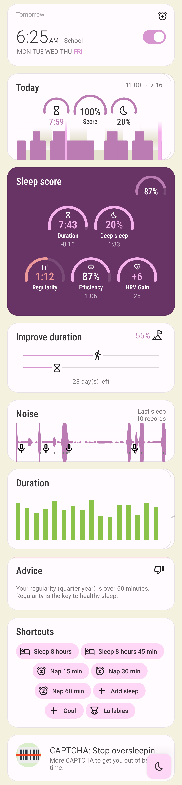
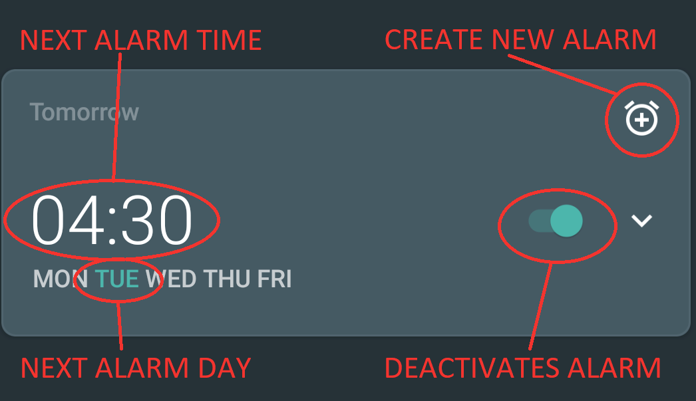
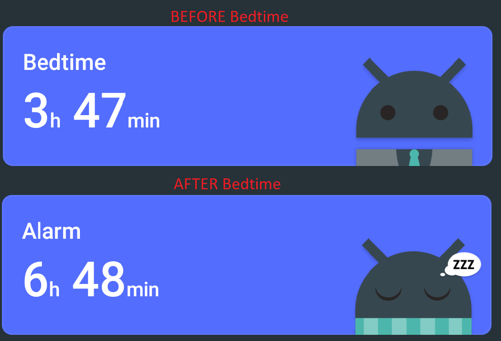

Dashboard home screen is designed to give you just the info you need at a glance. If you find anything irrelevant - just swipe the card away to create space for relevant content.
If you use some of the cards frequently, long press to pin it to the top.
[EXAMPLE] Do you use Shortcuts to start naps or sleep tracking with an ideal alarm every day? Just pin the Shortcut card to top Are you working on an active Goal? Just pin it to always see your latest progress.
.The whole Dashboard with all cards visible.

Other home screen types are Alarms only mode and Tabs.
Left ☰ menu -> Home screen section -> Dashboard Settings -> Personalize -> Home screen
Alarm card#
Shows you the first next active alarm.
- You can see the alarm time and day of the week, when the very next alarm is scheduled at first glance:

- Simple tapping on alarm time opens dialogue for changing the alarm time.
- Tapping on icon:ic_alarm_plus[] opens the dialogue for creating a new alarm.
- Tapping on any other place of the card opens list of all alarms
- Alarm card has also a special function - you can skip next alarm (or cancel skipping the alarm), edit alarm or delete alarm directly from this card by long pressing on it.
Tutorial card#
Simple guide through all the available features in the app to help our new users navigate in the app.
- Swiping the card will show you next list.
- Taping on the card will reveal the presented feature in the settings.
Bedtime / alarm card#
Shows either time left to your bedtime, or time left to the alarm time.
- If the current time is before the bedtime (and the bedtime is closer than 4 hours), the bedtime card will show you time left till the bedtime.
- If the current time is after the bedtime, the card shows the time left till the alarm.

News card#
Temporary card shown only during important events, release notes, or with a crucial message.
Best of noises card#
Shows you the selection of the best sounds recorded last night.
- Tapping this card plays the set of noises.
Sleep score card #
Shows Sleep score based on the recent 14 days.
- Tapping on this card opens Stats (see Stats)
Graphs card#
Shows you graphs from the Charts section.
- You can swipe through the graphs, right ↔ left.
- Tapping this card opens the last graph. See (How to read sleep graphs).
Noise card#
Shows latest noise recordings.
Charts card#
Shows you graphs from the Charts section.
- You can swipe through the different categories, right ↔ left.
- Tapping on this card opens Charts section.
Advice card #
Shows a random advice from the Advice section. More advice will show up when tapping on the card.
Goal card #
Shows your active Goal progress. There are two progress bars one shows percentages of completion and the other time progress. With some goals, the card can advice you what needs to be the next value to keep you on track to successfully finish the goal.
- Tapping on this card opens Advice section.
Shortcuts card #
A mini-board with shortcuts.
- icon:ic_action_bedtime[] Sleep X hour: Starts sleep tracking with and alarm based on your Daily sleep duration goal (+ smart period and tracking start delay).
- icon:ic_action_snooze[] Nap: Starts a nap with tracking; smart period from Settings -> Sleep tracking -> Smart wake up -> Nap smart period is applied.
- icon:plus[] Add sleep: For adding a period of sleep manually, when you forgot tracking. icon:plus[] Add goal:_: for adding a new goal (read more about Goals).
- icon:ic_action_lullaby[] Lullabies: A quick access to the lullabies.
Note: You can create a shortcut (Add alarm, Nap, Sleep X hours and Sleep tracking) widget for your main screen (see here for details).
- Add-on card: A short presentation of our add-ons, compatible devices or our other apps.
- Tapping this card opens list of add-ons and other applications made by our team.
Guide#
- How to hide a card on Dashboard: Any card can be simple swipe away from the dashboard. You can also use the Hide / Show button at the bottom of Dashboard.
- How to pin a card to top position: If you long press the card, it is pinned to the top position on the Dashboard. This option works on all cards except Alarm card and Chart card.